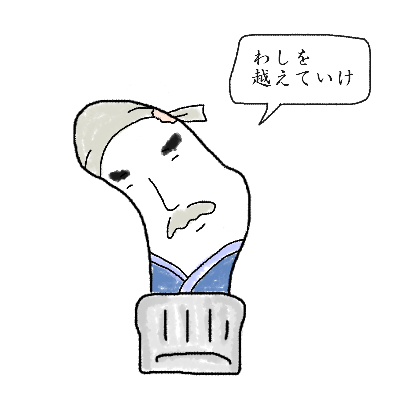

あなたの診断結果
？ ？ ？ （キャラクター名前募集中）親指の付け根外側にあく人
【完成度の高い靴下破りを誇る、孤高の職人肌！
「俺を越えていけ」と背中で語り、
「やっぱり超えるな」と言い放つ本音を隠せないタイプ】

「俺を越えていけ……！
（※ただし、本当に越えていいとは言ってない）」
日々靴の壁からの過酷なプレッシャーをいぶし銀の技で受け流す、孤高の職人！完成度の高すぎる破れっぷりに弟子入り志願者は後を絶たないが、師匠としてのプライドは死守する頑固おやじタイプ！
あなたは、「靴の壁からのハードなプレッシャーと摩擦を、長年の経験と独自の足運びによって完璧にいなす、いぶし銀の職人肌タイプ」です。
歩くたびに外側からかかる荷重をただ耐え忍ぶのではなく、美しく芸術的な擦り切れへと昇華させるその技術は、もはや一つの伝統芸能。
その背中があまりにもシブいため、「ぜひ弟子入りさせてください！」と後を絶たない若手（他の指や別の穴）を引き連れています。
普段は「ふっ、俺の背中を見て学びな、いつかこの境地を越えていけ」とカッコよく言い放っているのですが、調子に乗った弟子たちが先にメディアやSNSでチヤホヤされ始めると、途端に「ちょっと待て！ まずは師匠（俺）を立てろ！！」とちゃぶ台をひっくり返すような人間臭さを爆発させます。
職人としてのプライドと、めんどくさいおやじ感が絶妙にミックスされた、愛さずにいられない孤高のマスターです。
頑固おやじ職人の生態
- 親指の付け根という過酷なプレッシャー地帯を、長年の技で「自分だけの特等席」に仕立て上げている
- 背中で語るスタイルを貫いているが、内心は「もっと褒めてほしい」「敬ってほしい」欲が強め
- 「俺を越えていけ」が定番のカッコいいセリフのはずが、直後に「お前、今俺より目立とうとしなかったか？」とスネ出す
- 完成度の高すぎる破れっぷりを見た周囲からは、「技は本物だけど、性格がめんどくさい」と密かに噂されている
最後にひとつ。
今日も孤高の背中で弟子を唸らせ、直後に「俺を立てろ！」と怒鳴り散らしている職人王よ。
その矛盾だらけのいぶし銀の美学を、今すぐすべての人間たちに布告せよ！
このキャラクターに名前をつける
思いついた名前を教えてね！
※このスタンプには日陰に消えたボツキャラが混ざっています
※この診断はただのお遊びです。
※靴下の穴が開く場所には個人差があります。